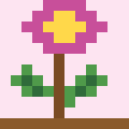

พรรณไม้ไทย
พรรณไม้ไทย
Ornamental Plants
กล้วยไม้สกุลหวาย – Dendrobium orchid
Dendrobium spp.
Colourful orchids grown for cut flowers.
View detailsHome / Ornamental Plants
Flowers and foliage for gardens, homes and celebrations.

Dendrobium spp.
Colourful orchids grown for cut flowers.
View details
Cassia fistula
Thailand's national flower, with golden hanging blooms.
View details
Bougainvillea spp.
Papery pink bracts that colour fences and walls.
View details